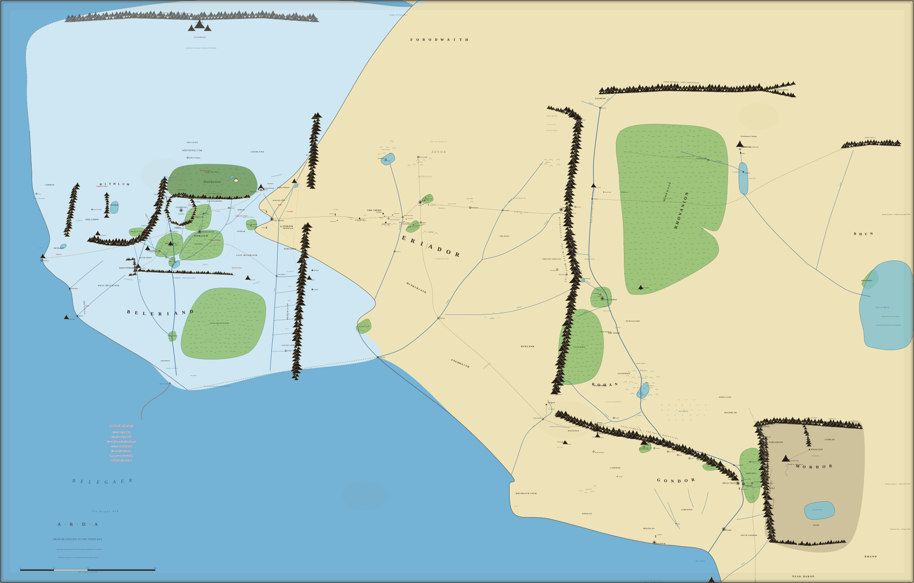

Drag the slider: political borders and the drowning of Beleriand change with time on the locked atlas base.
Hover a realm for its span, description, confidence and citation. Corpus-only (ARDA_TIMELINE.md).
physical changeborders

Border style encodes confidence: solid = High (named rivers/ranges), dashed = Medium ("between X and Y"),
dotted = Low (schematic; bounds unrecorded). Colors: blue Elven · green Men · orange Dwarves · violet Númenor ·
gold Hobbits · red the Shadow · teal mixed. Before the War of Wrath the drowned lands render as living parchment;
after, the pale water returns. Númenor lies far west of this canvas — its rise and fall appear in the event panel.
Nothing herein is invented: every border derives from ARDA_TIMELINE.md §2 with its citations.